CallGrid
We designed CallGrid as a standalone business phone platform that could connect to different CRMs.

Overview
Context
The company and Kommo had developed CRM PBX for Kommo CRM. That work gave the team experience managing phone numbers, routing and tracking calls, handling SMS and integrating telephony with a CRM.
With its own brand, the company wanted to reach customers directly, sell to a wider international audience and create a new source of revenue.
The challenge
CRM PBX supported complex telephony workflows, but the product structure largely followed the system’s technical logic. Even to configure a basic workflow, users had to set up and link phone numbers, staff accounts, schedules, inbound and outbound call settings, queues and routing rules in a specific order.
The team reached customers through Kommo, and some workflows assumed the customer used Kommo CRM.
We needed to identify which workflows could work across CRMs, simplify setup and help customers understand which features their business needed.
Research
I audited the CRM PBX workspace and mapped how phone numbers, users, schedules, inbound and outbound call flows, interactive voice response (IVR) menus, queues, messages and integrations depended on one another.
The analysis helped identify which decisions were driven by the Kommo ecosystem and which could be adapted for a standalone product. The guiding principle was to separate the technical structure of telephony from the user’s workflow: customers need to understand the task they are solving, rather than how objects are connected inside the system.
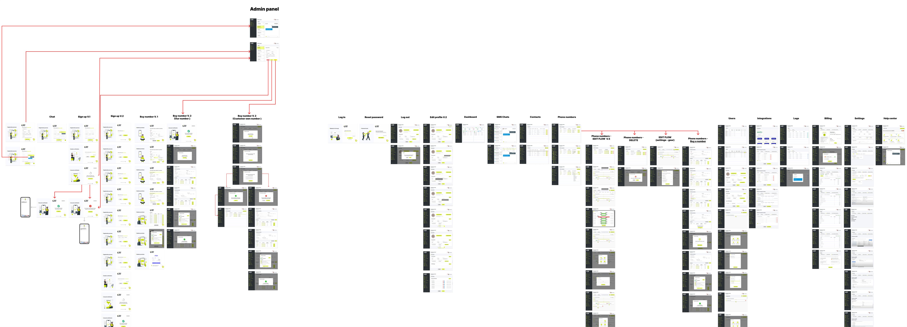
In parallel, I worked with colleagues in audience research and marketing to understand potential users. We used the findings to draft personas. The examples covered the US, Canada and the UK. We designed for an international audience, and the launch markets had yet to be decided.
We developed customer journey maps for the main segments, from discovering the product and comparing solutions through implementation, daily use and renewal. Recurring barriers included complex initial setup, concerns about integration and data migration, unclear costs and the need for support after connecting the service.
I also conducted a competitive analysis of cloud telephony and call tracking services. I compared onboarding, number and employee management, routing, messaging, analytics, CRM integrations, pricing and the ways these services explained their value.


The research pointed to three decisions customers would need help with. How would they set up a call flow, estimate the cost and connect their existing CRM?
Hypothesis 1. If we translated the technical logic of telephony into sequential business workflows and revealed complexity gradually, users would find the service easier to configure.
Hypothesis 2. If we divided the platform’s capabilities into standalone modules and clearly showed their value and cost, businesses could choose a suitable configuration and expand it as they grew.
Hypothesis 3. If we made CRM integrations a standalone part of the product, CallGrid could work beyond the Kommo ecosystem and serve a broader audience.
Process
Translate technical logic into clear workflows
I first organised the main telephony objects and their setup sequence. In the existing CRM PBX, the number, employee, schedule and call handling flow depended on one another, so an error at one stage could affect the entire flow.

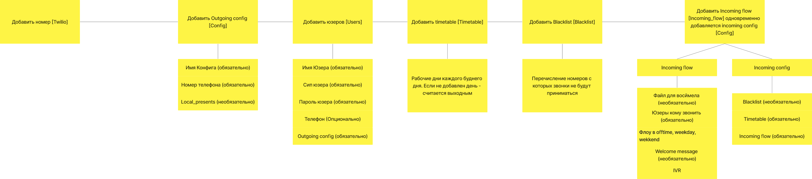

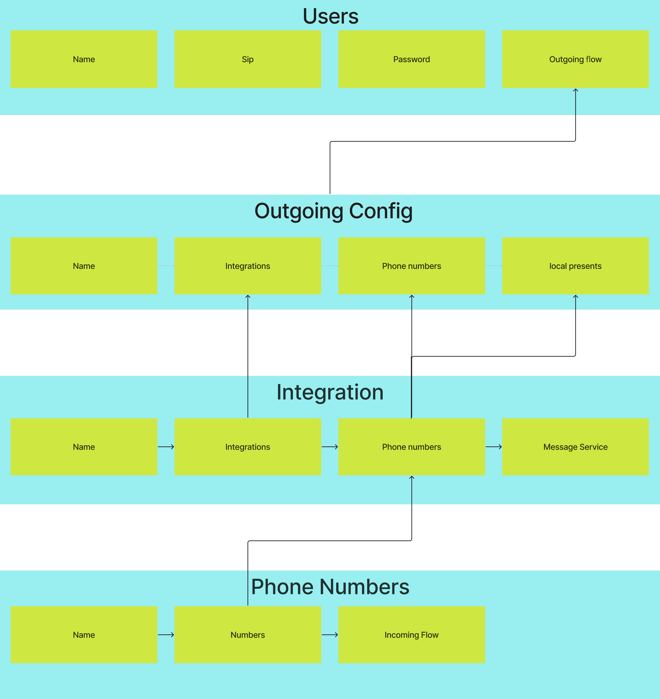

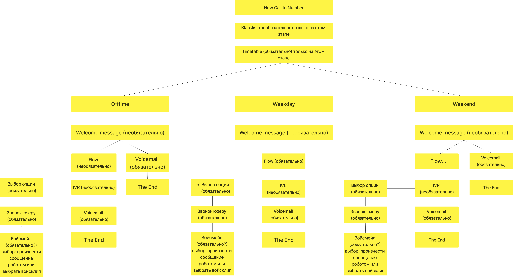

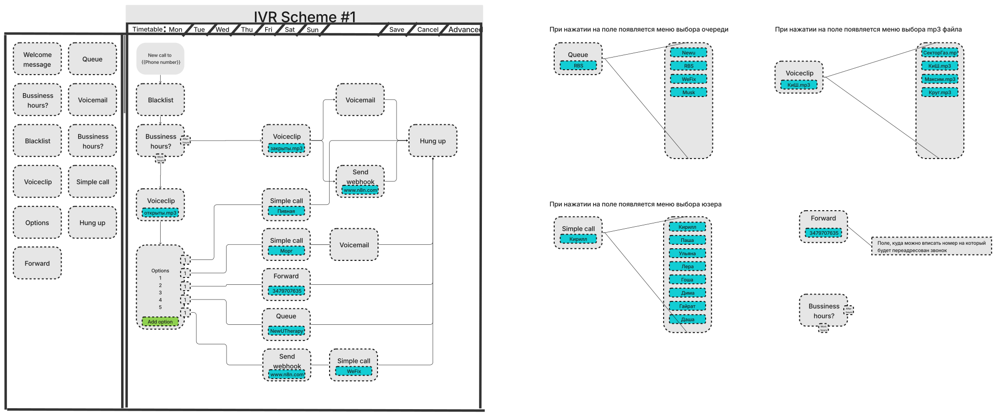
In CallGrid, complex logic was revealed gradually. Users first selected a business task, then configured the necessary parameters: a number, team, schedule, routing rules, queue or voice menu.

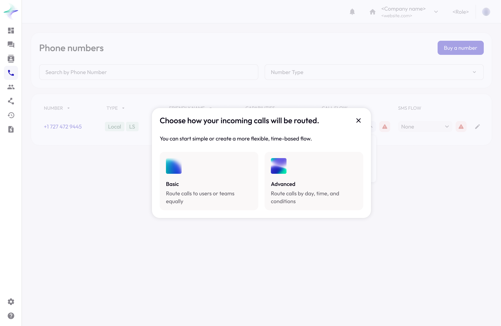
Interface states accounted for system constraints. We needed to show users the required connections without overwhelming them with the internal structure of telephony or allowing them to create an incomplete flow.


I also worked through number management, incoming and outgoing calls, schedules, IVR, queues, voicemail, messages and communication history.

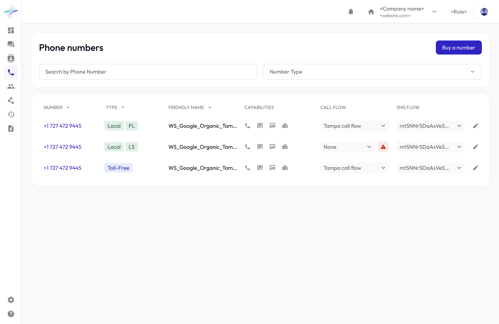

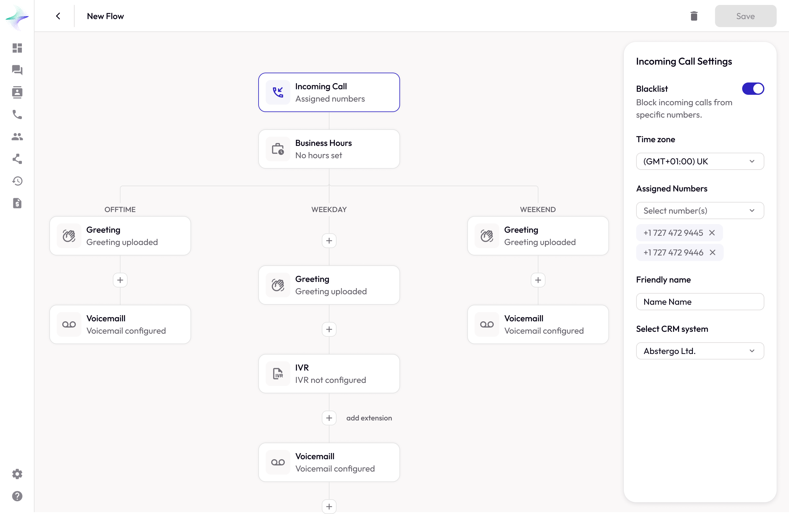

Build a modular product with clear pricing
Together with the team, we divided functionality into the product’s core and areas for future development.
The core structure included cloud telephony, SMS, call tracking, mobile access, account analytics and CRM integrations. Advanced analytics, AI, transcription, voicemail and templates were considered additional capabilities and areas for growth.

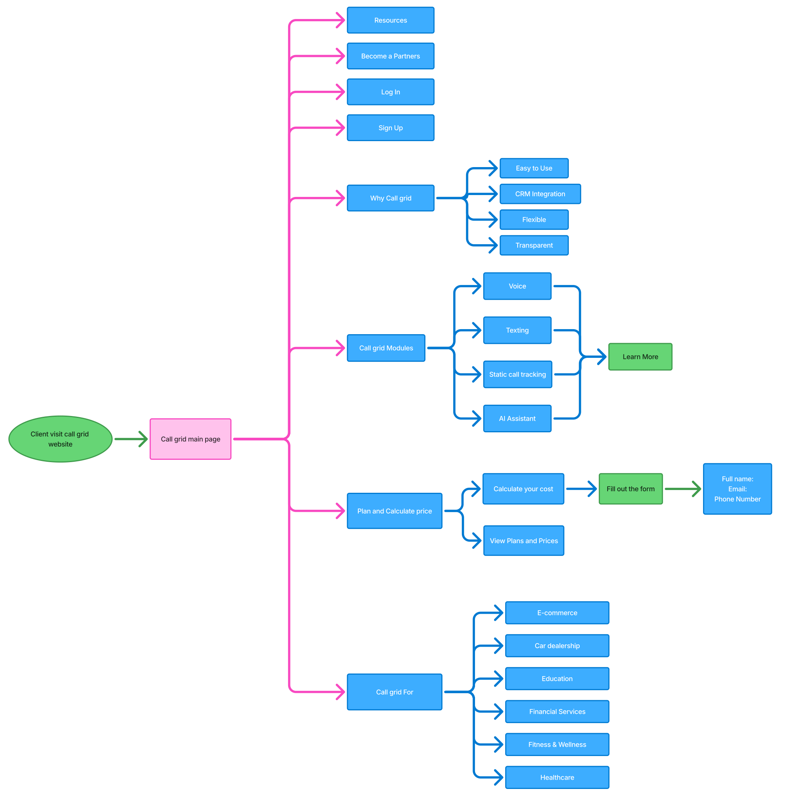
This formed the basis of a modular product architecture: Voice, SMS, Call Tracking, Analytics, AI and CRM Integrations. Users could begin with basic telephony and add capabilities as their business developed.
A pricing model was developed separately. Base plans were supplemented with AI and call tracking packages, additional numbers and usage-based charges. We planned a calculator for the website so customers could estimate the total cost before signing up.
This made pricing part of the user experience, rather than hidden information available only after contacting sales.

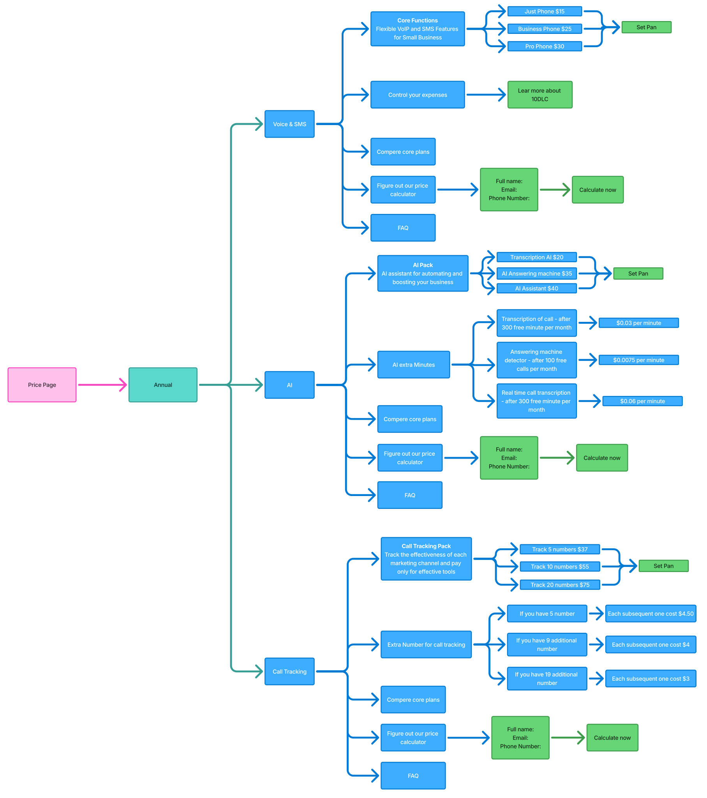

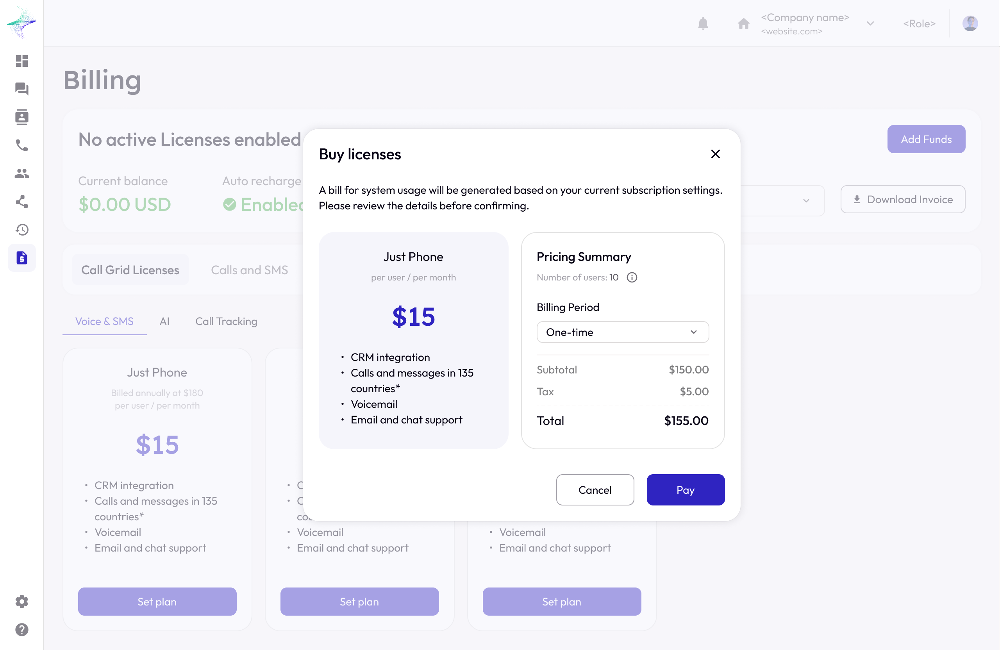
Make integrations a standalone part of the product
CRM integration was one of the main barriers in the customer journey maps. Users were concerned about a complicated connection process, data loss and disruption to existing workflows.
We therefore treated CRM integrations as part of CallGrid’s main onboarding flow, rather than an additional setting after launch.
Users selected a CRM, determined which data to synchronise and could see the connection status. This allowed CallGrid to be positioned as a standalone communications platform that could fit into a business’s existing infrastructure.

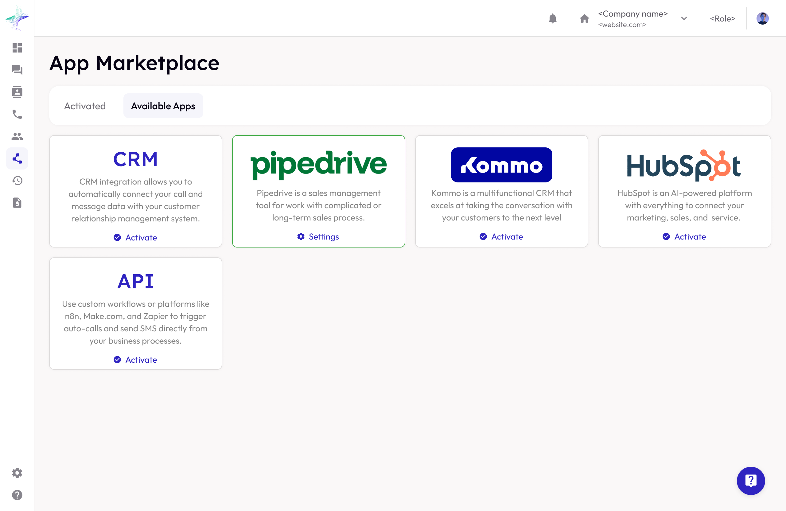

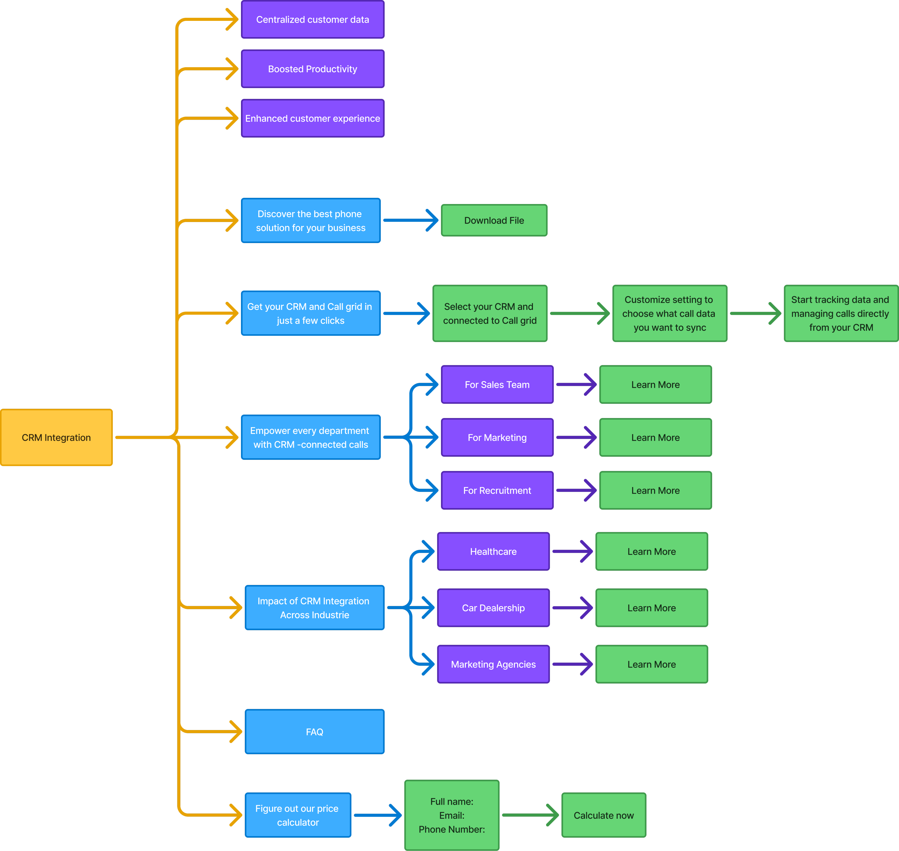

Positioning and visual system
A standalone product needed its own visual language, one that would not be perceived as an extension of CRM PBX or the Kommo interface.
I analysed competitors’ websites and visual approaches, then developed the brand direction, tone of voice, logo, colour system and rules for applying the identity.
CallGrid was intended to feel technologically capable yet accessible: flexible, understandable to small businesses and ready to scale. The visual system was built around connections and communication, and was used in the account interface, mobile app and marketing materials.


Results
A change in company strategy put CallGrid on hold before a full market launch.
- Standalone product design
- We adapted the Kommo call flows for use with other CRMs and designed the pricing model, onboarding, and web and mobile interfaces.
- Work reused
- The company reused some of the call flows, components and CRM integration work in its existing products.